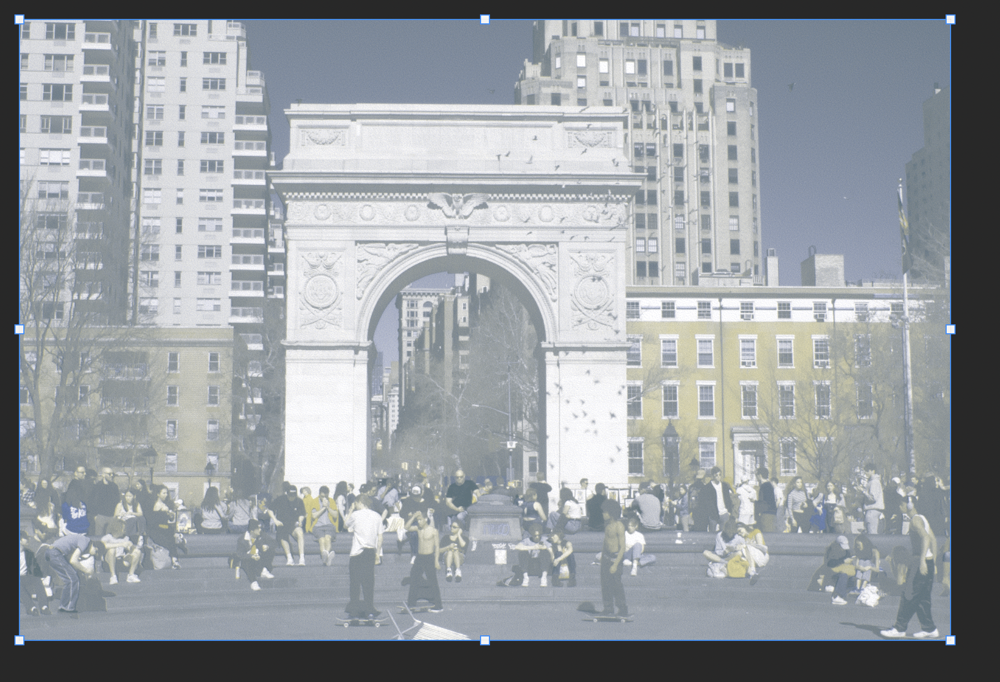

week 08 [ mar. 11, 24 ]
midterm week !
final deliverable: link to my zine ⇥
i got into the actual design of my zine this week. i focused the first one on washington square park. i started off by experimenting with the risograph printer to get myself familiar with the work flow of preparing and printing files since i havent used it before on my own.
this was helpful in allowing me to guage what color combos i like best. i experiemnted mixing red, green, blue, pink, yellow, and black in many different ways. i found my favorite color combos are probably:
* blue + yellow +pink
* Blue red black
* Green black
* Yellow green blue
another thing this helped me realize is that printing is a long hard tedious process. i decided it would be best to limit myself only to 2-3 colors MAX just to save myself the headache. my currect fav color combos i want to use are:
* blue + yellow
* Blue + pink
* pink + yellow + blue
this will probbaly change but for now its this
i then drew out a wire frame for my cover and pages.
i could not find free versions of the fonts i wanted to use so i ended up using Proxima Nova and Garamond. i decided to use the colors blue and yellow for my first zine.
i then got started on the zine. the hardest part wasnt even the design part it was setting up the files for preview, it was a very very tredious process. i used the tools InDesign and Photoshop. here is a screenshot of all the images i had to work with :
i had to be very careful with my layers in InDesign because I will have to print each color layer individually. because of this, i had to create three seperate layer groups and track them carefully
here is the end result of my first draft of zine 1. i still need to finish up like a spread and a half. i am pending an interview with a street vendor who often sells at washington square park, i sent them questions and im waiting on their reply.
